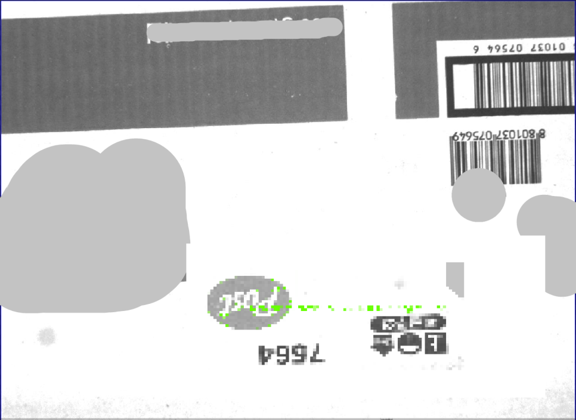

제조 · 포장·조립 · 로봇비전
머신비전·로봇 Pick & Place 자동화 시스템 사례
산업용 카메라 · 로봇
제품 위치와 회전각을 계산해 로봇에 전달하고, 카메라·로봇 좌표계를 캘리브레이션한 Pick & Place 구성 사례입니다. 제품의 공급 위치가 달라지는 공정에서 반복 이송 작업을 자동화하도록 구성했습니다.

Project Summary
프로젝트 핵심 구성
- 산업
- 제조 · 포장·조립
- 검사·자동화 대상
- 머신비전·로봇 Pick & Place 자동화
- 주요 기술
- 산업용 카메라 · 로봇
- 적용 구분
- 프로젝트 사례
01 · Overview
프로젝트 개요
제품 위치와 회전각을 계산해 로봇에 전달하고, 카메라·로봇 좌표계를 캘리브레이션한 Pick & Place 구성 사례입니다. 제품의 공급 위치가 달라지는 공정에서 반복 이송 작업을 자동화하도록 구성했습니다.
02 · Problem
프로젝트에서 해결해야 했던 문제
자동화가 필요한 많은 생산라인에서는 다음과 같은 고민을 하고 있습니다.
작업자가 반복적으로 제품을 집고 놓는 작업을 수행하고 있다.
제품 위치가 일정하지 않아 로봇만으로는 작업이 어렵다.
제품 종류가 자주 변경된다.
생산량은 늘어나는데 인력 확보가 쉽지 않다.
외국인 작업자 증가로 작업 품질 편차가 발생한다.
이러한 공정에서는 단순히 로봇을 설치하는 것만으로는 해결되지 않습니다.
로봇이 제품의 정확한 위치를 인식하고 판단할 수 있는 눈(Eye) 이 필요합니다.
- 제품 공급 위치 편차
- 카메라·로봇 좌표계 보정
- 반복 이송 작업 자동화
03 · System
검사·자동화 시스템 구성
제품 위치와 회전각을 계산해 로봇에 전달하고, 카메라·로봇 좌표계를 캘리브레이션한 Pick & Place 구성 사례입니다. 제품의 공급 위치가 달라지는 공정에서 반복 이송 작업을 자동화하도록 구성했습니다.
위치·회전각 계산
좌표계 변환
로봇 Pick & Place
04 · Inspection
고객의 고민
자동화가 필요한 많은 생산라인에서는 다음과 같은 고민을 하고 있습니다.
작업자가 반복적으로 제품을 집고 놓는 작업을 수행하고 있다.
제품 위치가 일정하지 않아 로봇만으로는 작업이 어렵다.
제품 종류가 자주 변경된다.
생산량은 늘어나는데 인력 확보가 쉽지 않다.
외국인 작업자 증가로 작업 품질 편차가 발생한다.
이러한 공정에서는 단순히 로봇을 설치하는 것만으로는 해결되지 않습니다.
로봇이 제품의 정확한 위치를 인식하고 판단할 수 있는 눈(Eye) 이 필요합니다.
05 · Inspection
머신비전이 로봇의 눈이 됩니다
이번 시스템에서는 산업용 카메라를 이용하여 제품의 위치를 인식합니다.
카메라가
제품의 위치(X)
제품의 위치(Y)
회전각(θ)
을 계산하면,
해당 좌표를 로봇으로 전달하여 로봇이 제품을 정확한 위치에서 집고 원하는 위치로 이동시키도록 구성하였습니다.
이러한 방식은
박스 Pick & Place
제품 Pick & Place
트레이 적재
패키징 자동화
조립 공정
등 다양한 산업 분야에 적용할 수 있습니다.
06 · Inspection
가장 중요한 것은 캘리브레이션입니다
로봇 자동화에서 가장 중요한 과정 중 하나는 캘리브레이션(Calibration) 입니다.
카메라가 인식한 좌표와
로봇이 움직이는 좌표계는 서로 다르기 때문에,
두 좌표계를 정확하게 일치시키는 작업이 반드시 필요합니다.
ASPEC은 다양한 프로젝트 경험을 바탕으로
카메라와 로봇의 좌표계를 정밀하게 보정하여
높은 위치 정확도를 확보하고 있습니다.
이 과정이 정확해야만 로봇이 제품을 정확한 위치에서 집을 수 있습니다.
07 · Inspection
꼭 고가의 비전 시스템이 필요한 것은 아닙니다
많은 분들이 로봇 자동화에는 매우 고가의 비전 시스템이 필요하다고 생각합니다.
하지만 실제로는 고객이 원하는 정밀도와 생산 환경에 맞는 장비를 선택하는 것이 더 중요합니다.
이번 프로젝트 역시 합리적인 비용의 머신비전 시스템을 적용하여 안정적인 Pick & Place 자동화를 구현하였습니다.
필요 이상의 고가 장비를 제안하기보다,
고객의 생산 환경에 가장 적합한 장비를 선정하여 비용 부담을 줄이면서도 충분한 성능을 확보하였습니다.
08 · Inspection
최신 스마트팩토리에서 가장 많이 적용되는 자동화
최근 스마트팩토리 구축에서는 Pick & Place 자동화가 매우 빠르게 증가하고 있습니다.
특히
식품
화장품
제약·바이오
전자부품
자동차 부품
물류 및 포장
등 다양한 산업에서 머신비전과 로봇을 결합한 자동화 시스템이 적극적으로 도입되고 있습니다.
생산성 향상뿐 아니라 품질 표준화와 인력 의존도를 줄일 수 있기 때문입니다.
09 · Inspection
이번 시스템을 통해 고객이 얻을 수 있는 효과
✔ 제품 위치 자동 인식
✔ 로봇 Pick & Place 자동화
✔ 패키징 자동화
✔ 포장 자동화
✔ 작업자의 반복 작업 최소화
✔ 휴먼에러 감소
✔ 생산성 향상
✔ 품질 표준화
✔ 다양한 제품 적용 가능
✔ 합리적인 비용으로 자동화 구축
10 · Inspection
ASPEC의 생각
로봇 자동화는 단순히 로봇을 설치한다고 완성되지 않습니다.
제품을 정확하게 인식하고,
좌표를 계산하고,
로봇과 정확하게 연동하여,
생산라인에서 안정적으로 동작하도록 만드는 것이 가장 중요합니다.
ASPEC은 다양한 머신비전 프로젝트와 로봇 연동 경험을 바탕으로 고객의 생산 환경에 가장 적합한 Pick & Place 솔루션을 구축하고 있습니다.
고객이 원하는 것은 가장 비싼 시스템이 아니라 가장 효율적이고 안정적인 자동화 시스템이라는 점을 잘 알고 있기 때문에, 예산과 생산 환경을 함께 고려하여 최적의 솔루션을 제안해 드리고 있습니다.
Operation
현장 적용과 운영 조건
제품 위치와 회전각을 계산해 로봇에 전달하고, 카메라·로봇 좌표계를 캘리브레이션한 Pick & Place 구성 사례입니다. 제품의 공급 위치가 달라지는 공정에서 반복 이송 작업을 자동화하도록 구성했습니다.
- 제품 공급 위치 편차
- 카메라·로봇 좌표계 보정
- 반복 이송 작업 자동화
Result
적용 효과
- 제품 위치 자동 인식
- 로봇 Pick & Place 자동화
- 패키징 자동화
- 포장 자동화
- 작업자의 반복 작업 최소화
- 휴먼에러 감소
- 생산성 향상
- 품질 표준화
- 다양한 제품 적용 가능
- 합리적인 비용으로 자동화 구축
Engineering
ASPEC의 머신비전 시스템 설계 방식
검사 대상의 재질과 형상, 설치 공간과 생산 조건에 맞춰 장비·광학·소프트웨어와 설비 연동을 함께 검토합니다.
- 제품 공급 위치 편차
- 카메라·로봇 좌표계 보정
- 반복 이송 작업 자동화
08 · Related Cases
관련 구축사례
비슷한 공정의 자동화를 검토하고 계신가요?
검사 대상과 불량 샘플, 설치 공간, 택타임을 알려주시면 적용 구성을 검토해 드립니다.